컴퓨터활용능력-2급 (2004-10-03 기출문제)
1과목: 컴퓨터 일반
1. 아날로그신호를 디지털신호로 또는 디지털신호를 아날로그신호로 변환하는 장치를 의미하는 것은?
- 코덱(CODEC)
- 필터링(Filtering)
- 샘플링(Sampling)
- 미디(MIDI)
(정답률: 74%)

2. 다음 중 실행 중인 프로그램만을 종료하는 방법으로 가장 거리가 먼 것은?
- 실행 중인 프로그램 창의 제목 표시줄에서 를 마우스로 클릭한다.
- [Ctrl]+[Alt]+[Shift] 키를 두 번 눌러 표시되는 창에서 종료하려는 파일을 선택하고 [작업종료] 버튼을 누른다.
- 작업표시줄에서 실행 프로그램을 마우스 오른쪽 버튼으로 클릭한 후, [닫기]를 누른다.
- 종료하려는 프로그램이 활성화된 상태에서 키보드의 [Alt]+[F4] 를 누른다.
(정답률: 80%)
3. Windows에서 winipcfg 명령을 이용하여 알아낼 수 없는 정보는?(문제오류로 실제 시험장에서 모두 정답 처리한 문제입니다. 여기서는 1번을 정답 처리 합니다.)
- DNS 서버
- 서브네트 마스크(Subnet Mask)
- IP 주소
- 게이트웨이(Gateway)
(정답률: 83%)
4. Windows에서 컴퓨터에 설치되어 있는 모든 하드웨어의 등록 정보를 보기 위한 순서로 올바른 것은?
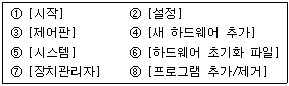
- ①-②-③-④
- ①-②-③-⑧
- ①-②-③-⑤-⑥
- ①-②-③-⑤-⑦
(정답률: 69%)
5. 다음 중 [제어판]-[프로그램 추가/삭제]에서 할 수 있는 일로 가장 거리가 먼 것은?
- 설치되어 있는 프로그램을 제거할 수 있다.
- 휴지통의 파일, 임시파일 등을 삭제하여 하드디스크의 용량을 늘리는 역할을 한다.
- Windows에서 설치되지 않은 구성요소를 설치할 수 있다.
- Windows의 시동디스크를 만들 수 있다.
(정답률: 59%)
6. Windows의 [시작]-[찾기]에서 파일이나 폴더 찾기에 대한 설명으로 옳지 않은 것은?
- 특정 기간에 수정된 파일이나 폴더를 찾을 수 있다.
- 파일의 속성을 이용해서 읽기 전용 파일을 찾을 수 있다.
- 파일명의 대소문자를 구별하여 찾을 수 있다.
- 파일의 최소 크기나 최대 크기를 지정하여 찾을 수 있다.
(정답률: 39%)
7. 다음 중 최초의 상업용 전자계산기는 어느 것인가?
- UNIVAC-Ⅰ
- IBM/370
- EDVAC
- ENIVAC
(정답률: 57%)
8. 기존 CD와 같은 크기로 최대 17GB의 용량을 가지며 영상물 저장에 적합한 차세대 영상을 주도해 나갈 정보 매체로 가장 적합한 것은?
- CD-V
- CD-RW
- DVD
- CD-DA
(정답률: 79%)
9. 디스크의 기업 표면은 동심원으로 나누어지는데 이를 무엇이라 하는가?
- 섹터(Sector)
- 실린더(Cylinder)
- 클러스터(Cluster)
- 트랙(Track)
(정답률: 66%)
10. 인터넷 익스플로러는 사용자가 열어본 페이지에 관련된 파일을 보관하여 이후 다시 해당 사이트 접속을 요구하면 그 사이트에서 갱신된 내용만 가져와서 보다 빠르게 보여주는 기능을 무엇이라 하는가 ?
- 쿠키(Cookie)
- 즐겨 찾기(Bookmark)
- 캐싱(Caching)
- 데이터 디들링(Data Diddling)
(정답률: 41%)
11. 컴퓨터 범죄의 예방 대책으로 가장 옳지 않는 것은?
- 방화벽의 설치로 네트워크의 정보가 보호되므로 바이러스를 예방하기 위한 백신의 설치는 전혀 필요 없게 된다.
- 가입자에게 과다한 정보를 요구하는 웹사이트는 가급적 가입하지 않는다.
- 정보 유출에 대한 지속적인 보안교육과 패스워드의 주기적인 갱신이 필요하다.
- 네트워크 내부에 방화벽을 설치하며 중요한 정보는 인증을 통해서 접근하도록 한다.
(정답률: 87%)
12. 컴퓨터의 세대특징을 설명한 것이다. 이중 틀린 것은 무엇인가?
- 제1세대는 하드웨어 개발에 치중하였으며 진공관 소자를 주요 소자로 사용하였다.
- 각 세대별 컴퓨터의 기억장치는 고속화, 대용량화되었다.
- 컴퓨터의 중앙처리장치는 속도가 빨라졌으며 기억장치의 용량이 증가했다.
- 5세대에 이르기까지 소프트웨어기술의 발달은 하드웨어 기술의 발달을 월등히 능가한다.
(정답률: 66%)
13. 다음에서 설명하고 있는 웹언어는 무엇인가 ?
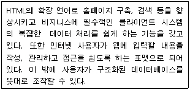
- UML
- XML
- WML
- SGML
(정답률: 66%)
14. Windows에서 프린터 설치에 관한 문제이다. 다음 중 설명이 옳지 않은 것은?
- 프린터마다 개별적으로 이름을 붙여 설치할 수 있다.
- 기본 프린터의 변경은 프린터 아이콘을 선택한 후 [파일]-[기본 프린터로 설정] 항목을 선택한다.
- 프린터가 시스템에 직접 연결되어 있는 경우는 ‘로컬 프린터’를, LAN상에서 다른 컴퓨터에 연결되어 있으면 ‘네트워크 프린터’를 선택한다.
- Windows에서는 프린터의 설치 시 가능한 프린터 개수는 오직 16대까지만 설치할 수 있다.
(정답률: 82%)
15. 컴퓨터 바이러스의 기능적 특징이 가장 아닌 것은?
- 자기 복제 기능
- 은폐 기능
- 자기 치료 기능
- 파괴 기능
(정답률: 88%)
16. 인터넷의 도메인 중 최상위 도메인(Top level domain)에 해당하지 않는 것은?
- COM
- GOV
- MIL
- AC
(정답률: 54%)
17. 다음 중 제어장치(Control Unit)의 구성 요소가 아닌 것은?
- 가산기(Adder)
- 프로그램 카운터(Program Counter)
- 부호기 (Encoder)
- 명령 레지스터 (Instruction Register)
(정답률: 55%)
18. 다음 중 마우스 포인터를 파일로 가져간 후, 마우스의 오른쪽 버튼을 클릭하였을 때 나타나는 것으로 가장 적절하지 않은 것은?
- 보내기
- 이름 바꾸기
- 옵션
- 바로 가기 만들기
(정답률: 68%)
19. 컴퓨터가 발달하면서 정보를 보호하는 보안시스템으로 다양한 인증시스템이 개발되고 있다. 특히 최근에 사람의 생체를 이용한 인식 장치들이 많이 개발되고 있는데 개발중인 생체인식 분야와 가장 거리가 먼 것은?
- 홍체
- 음성
- 코모양
- 지문
(정답률: 81%)
20. 다음 중 Windows에서 플러그 앤 플레이(Plug and play) 기능으로 가장 적절한 것은?
- 플러그 앤 플레이 기능을 사용하기 위해서는 하드웨어 제조사에서 배포하는 장치 드라이버가 반드시 필요하다.
- 플러그 앤 플레이 장치는 새로운 하드웨어를 자동으로 감지하여 필요한 소프트웨어를 설치한다.
- 모든 하드웨어 주변기기를 플러그 앤 플레이 기능으로 설치할 수 있다.
- 새로운 하드웨어는 반드시 새 하드웨어 추가 마법사를 통해서 설치하여야 한다.
(정답률: 70%)
2과목: 스프레드시트 일반
21. 다음 그림에서 메뉴의 [삽입]-[행]을 선택하면 어떻게 되는가?
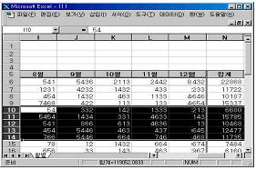
- 선택된 영역 아래에 한 개의 행이 삽입된다.
- 선택된 영역 아래에 5개의 행이 삽입된다.
- 선택된 영역 위에 한 개의 행이 삽입된다.
- 선택된 영역 위에 5개의 행이 삽입된다.
(정답률: 56%)
22. 다음 중 영문 소문자로 입력된 텍스트에서 첫 글자만 대문자로 바꾸는 함수는?
- TRIM 함수
- UPPER 함수
- LOWER 함수
- PROPER 함수
(정답률: 73%)
23. 아래의 함수식에서 결과가 다른 것은?
- =SUM(10,10,10)
- =SQRT(900)
- =ROUND(PI(),0)*10
- =CHOOSE(3,10,30,50)
(정답률: 52%)
24. 엑셀에서 오름차순과 내림차순이 아닌 사용자 정의 기준으로 정렬이 가능하다. 이러한 새로운 정렬 방법은 어디서 미리 정의해 주어야 하는가?
- [도구]-[옵션]-[사용자 정의 목록]
- [보기]-[사용자 지정 보기]
- [파일]-[등록 정보]-[사용자 지정]
- [데이터]-[정렬]-[사용자 정의 목록]
(정답률: 45%)
25. 만약 셀의 값이 10000을 초과하면 파란색으로 표시되면서 끝에 "원"자가 붙게 하고, 음수면 부호는 생략하고 빨간색으로 괄호 안에 수치를 표시하며 역시 "원"으로 표시하고자 한다. 올바른 사용자 정의 서식은?
- [파랑][>=10000]#,###_-;[빨강][<0](#,###);"원"
- [파랑][>10000]#,###_-"원";[빨강][<0](#,###)"원"
- [빨강](#,###)"원";[파랑][>10000]#,###_-"원"
- [파랑][>10000]#,###_-"원";[빨강](#,###)"원"
(정답률: 68%)
26. 사용자 정의 서식 파일의 설명 중 틀린 것은?
- 기본 워크시트 서식 파일을 만들려면 파일 이름 상자에 book을 입력해야만 한다.
- 확장자는 .xlt 이다.
- 사용자가 작성한 서식 파일은 기본적으로 'Templates' 폴더에 저장된다.
- 엑셀 프로그램에서 제공하는 서식 파일은 '스프레드시트' 탭에 표시된다.
(정답률: 69%)
27. 피벗 테이블에 대한 설명이다. 잘못된 것은?
- 예상 값을 계산하는데 매우 유용하다.
- 원본 데이터가 변경되면 피벗 테이블은 자동으로 변경되지는 않는다.
- 합계, 평균, 최대값, 최소값을 구할 수 있다.
- 원본 데이터 목록의 행이나 열의 위치를 변경하여 다양한 형태로 표시할 수 있다.
(정답률: 61%)
28. 다음 중 차트를 작성하는 순서가 바른 것은?
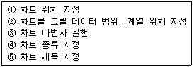
- ③-④-②-⑤-①
- ①-②-③-④-⑤
- ③-②-④-⑤-①
- ②-③-④-⑤-①
(정답률: 52%)
29. 다음 중 부분합 함수로 사용할 수 없는 것은?
- 합계
- 평균
- 최대값
- 중간값
(정답률: 80%)
30. 함수의 인수에 대한 설명으로 가장 잘못된 것은?
- 일반적으로 인수에는 숫자값, 텍스트값, 셀 참조 영역, 함수 등이 사용된다.
- 인수는 함수식의 전체 문자가 1,024자를 넘지 않는 한도에서 30개까지 사용이 가능하다.
- 인수의 시작과 끝은 반드시 등호(=)로만 구분한다.
- 인수는 함수의 계산에 필요한 값을 말한다.
(정답률: 69%)
31. 셀 서식에서 표시형식 "YY-M-DDD"로 설정하였을 때 데이터 "2004-10-03"을 입력하면 어떤 결과 값이 되는가?
- 04-10-03
- 2004-10-03
- 04-10-Sun
- 2004-10-Wed
(정답률: 74%)
32. 단위가 서로 다른 두 종류의 데이터에 대해, 한 차트에 다른 두 개의 단위로 데이터 값을 모두 나타내려면 어느 차트를 사용해야 하는가?
- 3차원 쪼개진 원형
- 블럭 영역형
- 이중 축 꺽은선형
- 피라미드형
(정답률: 81%)
33. 다음 [A 그림]은 원래 데이터를, [B 그림]은 정렬된 결과를 나타낸 그림이다. 정렬 기준 순서로 옳은 것은? (단 모든 정렬은 오름차순 정렬이다.)
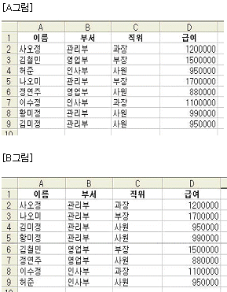
- 첫째 기준(부서), 둘째 기준(직위), 셋째 기준(이름)
- 첫째 기준(이름), 둘째 기준(직위), 셋째 기준(부서)
- 첫째 기준(직위), 둘째 기준(부서), 셋째 기준(이름)
- 첫째 기준(부서), 둘째 기준(이름), 셋째 기준(직위)
(정답률: 63%)
34. 다음 중 워크시트에서 숨겨져 있는 [C열]과 [D열]을 다시 표시하기 위한 작업과정에 대한 설명으로 옳은 것은?
- E열을 선택한 다음 마우스 오른쪽 단추를 눌러 숨기기 취소를 선택한다.
- B열에서 E열까지 드래그한 다음 창 메뉴에서 숨기기 취소를 선택한다.
- D열을 선택한 다음 마우스 오른쪽 단추를 눌러 숨기기 취소를 선택한다.
- B열에서 E열까지 드래그한 다음 마우스 오른쪽 단추를 눌러 숨기기 취소를 선택한다.
(정답률: 56%)
35. 그리기 도구 모음으로 작성한 다음의 개체가운데 "회전 또는 대칭" 기능을 사용할 수 없는 것은?
- [도형]-기본 도형
- 타원 및 직사각형
- (세로) 텍스트 상자
- 워드아트(Wordart)
(정답률: 60%)
36. 다음 중 모든 통합 문서에서 매크로를 실행시키고자 할 때 저장해야 할 위치는?
- 새 통합 문서
- 개인용 매크로 통합 문서
- 현재 통합 문서
- Visual Basic 소스 파일
(정답률: 66%)
37. 다음의 도구 모음에서 매크로 기록을 중지하는 "기록중지" 도구는?
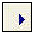
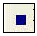
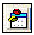
(정답률: 79%)
38. 인쇄할 때 페이지의 바닥글로 1/5과 같이 '페이지 번호/전체 페이지 수'가 표시되도록 하기 위해 바닥글 편집에서 "/"의 앞뒤에 선택해야 할 아이콘을 순서대로 나열한 것은?
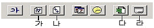
- 다, 라
- 가, 나
- 나, 가
- 라, 다
(정답률: 67%)
39. 다음 차트는 미래의 4분기에 대한 예측이다. 이때 사용하는 기능은 무엇인가?
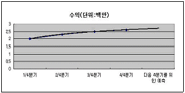
- 자동 합계
- 추세선
- 정렬
- 평균 구하기
(정답률: 84%)
40. 다음과 같이 셀 [C5]에 입력되어 있는 수식 “=B5/$C$1"을 아래 셀 [C7]로 복사하여 완성하려고 한다. 복사한 결과 셀 [C7]에 복사되어 들어가는 수식으로 맞는 것은?
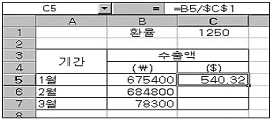
- =B7/C1
- =B7/$C1
- =B7/$C$1
- =B7/C$1
(정답률: 76%)